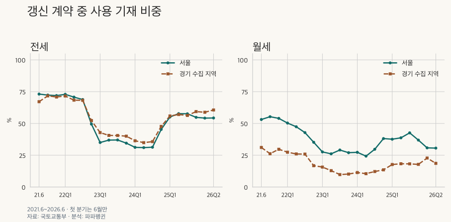
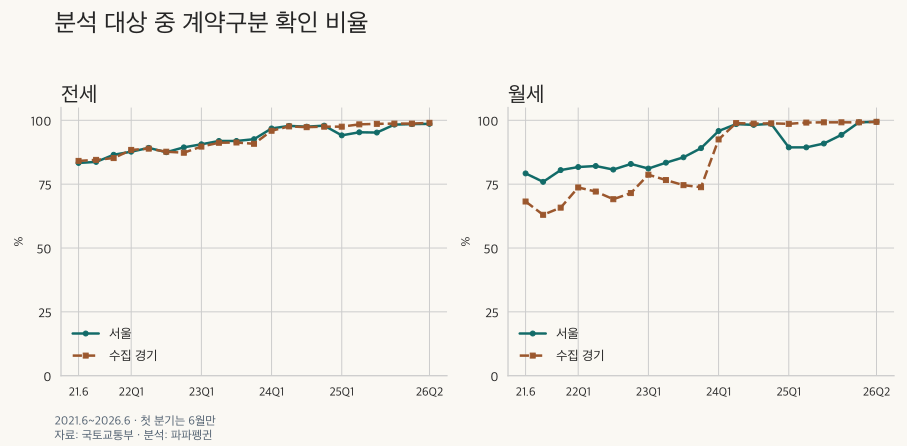

전세와 월세 계약 읽기 · 갱신요구권
갱신요구권 사용 비율: 서울·경기 실거래 기록의 숫자와 빈칸
서울·수집 경기 아파트의 월세·전세 갱신 비중과 갱신요구권 사용 기재를 비교합니다. 전체·기재 분모를 바꾸면 달라지는 순서, 표준 면적·같은 상반기 비교와 빈칸의 의미를 확인하세요.
분석 기간 · 2021.6~2026.6 · 정책 비교 2020.7.31 이후 | 자료 기준일 · 2026-10-04
실거래가 화면의 ‘갱신·사용’ 표시를 보면 세입자들이 갱신요구권을 얼마나 썼는지 궁금해집니다. 공개 기록에서 사용이라고 기재된 비중은 집계할 수 있지만, 빈칸까지 실제 미사용으로 볼 수는 없습니다. 서울·수집 경기의 아파트 계약에서 무엇이 확인되고, 어떤 비교를 조심해야 하는지 살펴봅니다. 월세·전세의 갱신 비중도 분모를 맞춰 비교합니다.
‘사용’ 표시가 없으면 갱신요구권을 쓰지 않은 건가요?
그렇게 확정할 수 없습니다. 이 자료에서 갱신 계약의 권리 항목은 ‘사용’ 또는 빈칸으로 나타납니다. 따라서 사용 표시가 있는 계약과 권리가 기재되지 않은 갱신 계약을 구분했습니다. 계약구분 자체가 빈칸인 경우는 갱신인지 신규인지도 알 수 없어 ‘구분 미상’으로 남겼습니다.
신고 서식과 공개 자료의 표기도 구분해야 합니다. 확인한 2023년 12월 29일 개정 주택 임대차 계약 신고서에는 ‘행사·미행사’ 선택란이 있습니다. 그러나 공개 자료의 빈칸이 그 서식에서 미행사를 선택한 결과인지까지 확인한 것은 아닙니다. 빈칸의 의미를 임의로 채우면 사용 비중의 해석도 달라집니다.
법적으로도 갱신이 모두 갱신요구권 행사는 아닙니다. 주택임대차보호법 제6조의3의 계약갱신요구권은 1회 행사할 수 있고, 그에 따라 갱신되는 기간은 2년입니다. 생활법령정보의 공식 안내는 묵시적 갱신을 갱신요구권 행사로 보지 않는다고 설명합니다. 개별 계약의 행사 여부는 당시 의사표시와 계약 경위를 함께 확인해야 합니다.
전세와 월세에서 사용 기재 비중은 얼마나 다른가요?
관측된 갱신 계약에서는 전세의 사용 기재 비중이 월세보다 높습니다. 다만 월세에는 계약구분을 알 수 없는 비중도 더 큽니다. 아래 두 비율은 분모가 다릅니다. 사용 기재 비중은 갱신 계약 중, 계약구분 확인 비율은 분석 대상 전체 중의 비율입니다.
| 지역 · 계약 | 분석 대상 (건) | 갱신 (건) | 사용 기재 (건) | 사용 기재 비중 | 계약구분 확인 비율 |
|---|---|---|---|---|---|
| 서울 · 전세 | 676,229 | 264,875 | 139,989 | 52.9% | 92.8% |
| 수집 경기 · 전세 | 881,602 | 303,723 | 165,046 | 54.3% | 92.9% |
| 서울 · 월세 | 537,783 | 146,766 | 52,934 | 36.1% | 88.9% |
| 수집 경기 · 월세 | 701,035 | 220,653 | 38,361 | 17.4% | 85.0% |
서울 25개 구·수집 경기 36개 지역의 아파트 계약입니다. 경기 전체나 전국 임차가구의 조사 결과가 아닙니다. 월 차임이 양수이면 보증금 크기와 무관하게 월세로 분류했습니다.
예를 들어 서울 전세는 갱신 264,875건 중 사용 기재 139,989건을 나눈 52.9%입니다. 신규 계약과 구분 미상까지 분모에 넣으면 다른 질문의 비율이 됩니다. 지역별 차이를 읽을 때도 먼저 같은 종류의 계약을 분모로 삼았는지 확인해야 합니다.
| 지역 · 계약 | 신규 (건) | 갱신·사용 기재 (건) | 갱신·권리 미기재 (건) | 구분 미상 (건) | 제외 (건) |
|---|---|---|---|---|---|
| 서울 · 전세 | 362,918 | 139,989 | 124,886 | 48,436 | 1,800 |
| 수집 경기 · 전세 | 515,212 | 165,046 | 138,677 | 62,667 | 2,738 |
| 서울 · 월세 | 331,127 | 52,934 | 93,832 | 59,890 | 1,485 |
| 수집 경기 · 월세 | 375,018 | 38,361 | 182,292 | 105,364 | 3,473 |
권리 미기재와 계약구분 미상은 서로 겹치지 않습니다. 앞의 네 분류를 합하면 분석 대상이고, 모호한 분류나 금액·면적 등의 조건으로 제외된 계약은 마지막 열에 따로 제시했습니다. 계약기간이 빈칸이거나 충돌한다는 이유만으로 권리 분석에서도 바로 제외하지는 않았습니다.
빈칸을 다르게 가정하면 사용 비중의 범위는 얼마나 넓어질까요?
| 지역 · 계약 | 관측 갱신 중 기재 비중 | 갱신의 권리 빈칸을 달리 배정 | 구분 미상도 갱신으로 배정 |
|---|---|---|---|
| 서울 · 전세 | 52.9% | 52.8~100.0% | 44.6~100.0% |
| 수집 경기 · 전세 | 54.3% | 54.3~100.0% | 45.0~100.0% |
| 서울 · 월세 | 36.1% | 36.0~100.0% | 25.6~100.0% |
| 수집 경기 · 월세 | 17.4% | 17.3~100.0% | 11.7~100.0% |
‘갱신의 권리 빈칸’ 열은 분모를 관측 갱신으로 고정하고 미기재를 모두 미사용 또는 모두 사용으로 배정한 범위입니다. 마지막 열은 구분 미상까지 모두 갱신으로 포함한 뒤 권리 빈칸과 함께 양 극단으로 배정했습니다. 사용 표시는 맞다고 가정했을 때의 범위이며, 신고되지 않은 계약이나 잘못된 사용 표시까지 설명하는 실제 사용률의 신뢰구간은 아닙니다.
월세의 갱신 비중은 전세보다 낮을까요?
기간과 지역에 따라 다릅니다. 2026년 상반기 서울의 전체 분석 대상 중 갱신 비중은 전세 51.4%·월세 40.5%, 수집 경기는 전세 42.4%·월세 39.1%입니다. 반면 2025년 상반기 수집 경기에서는 월세 41.1%가 전세 40.2%보다 높습니다. 한 기간의 순서를 모든 월세·전세 계약에 적용하지 않습니다.
갱신 비중과 권리 사용 기재 비중은 다른 질문입니다. 아래 ‘전체 중 갱신’은 갱신÷분석 대상, ‘기재 중 갱신’은 갱신÷신규·갱신 구분이 있는 계약입니다. 앞 절의 권리 사용 기재 비중은 사용 기재÷갱신입니다. 구분 미상을 신규로 채우지 않고 두 분모를 나란히 보겠습니다.
| 지역 · 계약 | 같은 기간 | 분석 대상 (건) | 구분 기재 (건) | 갱신 (건) | 전체 중 갱신 | 기재 중 갱신 | 구분 미상 비중 |
|---|---|---|---|---|---|---|---|
| 서울 · 전세 | 2025년 상반기 | 72,762 | 68,900 | 31,115 | 42.8% | 45.2% | 5.3% |
| 서울 · 월세 | 2025년 상반기 | 56,337 | 50,388 | 18,015 | 32.0% | 35.8% | 10.6% |
| 수집 경기 · 전세 | 2025년 상반기 | 89,870 | 87,996 | 36,123 | 40.2% | 41.1% | 2.1% |
| 수집 경기 · 월세 | 2025년 상반기 | 66,534 | 65,792 | 27,335 | 41.1% | 41.5% | 1.1% |
| 서울 · 전세 | 2026년 상반기 | 56,521 | 55,695 | 29,033 | 51.4% | 52.1% | 1.5% |
| 서울 · 월세 | 2026년 상반기 | 58,650 | 58,234 | 23,748 | 40.5% | 40.8% | 0.7% |
| 수집 경기 · 전세 | 2026년 상반기 | 74,278 | 73,440 | 31,492 | 42.4% | 42.9% | 1.1% |
| 수집 경기 · 월세 | 2026년 상반기 | 66,501 | 66,032 | 25,993 | 39.1% | 39.4% | 0.7% |
같은 상반기라도 미기재 비중과 들어온 계약의 구성이 달라집니다. 미기재를 제외한 비율이 실제 가구의 갱신 확률에 더 가깝다고 보장할 수는 없습니다. 금액이 변하지 않은 갱신이나 묵시적 갱신이 관측에서 빠지는 문제도 남습니다.
전체 주기간의 두 분모와 구분 미상 배정 범위
| 지역 · 계약 | 분석 대상 (건) | 구분 기재 (건) | 갱신 (건) | 구분 미상 (건) | 전체 중 갱신 | 기재 중 갱신 | 미상 배정 범위 |
|---|---|---|---|---|---|---|---|
| 서울 · 전세 | 676,229 | 627,793 | 264,875 | 48,436 | 39.2% | 42.2% | 39.1~46.4% |
| 서울 · 월세 | 537,783 | 477,893 | 146,766 | 59,890 | 27.3% | 30.7% | 27.2~38.5% |
| 수집 경기 · 전세 | 881,602 | 818,935 | 303,723 | 62,667 | 34.5% | 37.1% | 34.4~41.6% |
| 수집 경기 · 월세 | 701,035 | 595,671 | 220,653 | 105,364 | 31.5% | 37.0% | 31.4~46.6% |
2021년 6월~2026년 6월의 비교입니다. 미상을 전부 신규로 보면 아래쪽, 전부 갱신으로 보면 위쪽 비율이 됩니다. 두 끝은 바깥 방향으로 소수 첫째 자리까지 표시했습니다. 수집 경기의 전세·월세 범위는 서로 겹칩니다. 관측된 기록의 분류를 달리 가정한 범위이며, 신고되지 않은 계약까지 포함한 실제 갱신율의 신뢰구간이 아닙니다.
분모를 바꾸면 전세와 월세의 순서도 뒤집힙니다. 수집 경기의 2023년은 전체 중 갱신 비중이 전세 28.2%·월세 25.9%인데, 기재된 계약만 보면 31.1%·34.2%입니다. 구분 미상 비중이 각각 9.3%·24.1%로 다르기 때문입니다. 어느 쪽이 실제로 더 자주 갱신하는지 이 자료만으로 확정하지 않습니다.
분모를 바꾸면 전세·월세 순서가 바뀌는 모든 비교 조건
| 지역 · 계약 | 기간 | 면적 | 전체 중 갱신 | 기재 중 갱신 | 구분 미상 비중 |
|---|---|---|---|---|---|
| 수집 경기 · 전세 | 2021.06~2026.06 | 기타 면적 | 34.3% | 36.5% | 6.2% |
| 수집 경기 · 월세 | 2021.06~2026.06 | 기타 면적 | 31.9% | 40.3% | 20.9% |
| 수집 경기 · 전세 | 2023.04~2023.06 | 전체 면적 | 28.2% | 30.9% | 8.8% |
| 수집 경기 · 월세 | 2023.04~2023.06 | 전체 면적 | 25.5% | 33.3% | 23.4% |
| 수집 경기 · 전세 | 2023.07~2023.09 | 전체 면적 | 28.4% | 31.1% | 8.7% |
| 수집 경기 · 월세 | 2023.07~2023.09 | 전체 면적 | 27.5% | 36.9% | 25.4% |
| 수집 경기 · 전세 | 2023.10~2023.12 | 전체 면적 | 28.6% | 31.5% | 9.2% |
| 수집 경기 · 월세 | 2023.10~2023.12 | 전체 면적 | 26.9% | 36.5% | 26.2% |
| 수집 경기 · 전세 | 2023.01~2023.12 | 전체 면적 | 28.2% | 31.1% | 9.3% |
| 수집 경기 · 월세 | 2023.01~2023.12 | 전체 면적 | 25.9% | 34.2% | 24.1% |
| 수집 경기 · 전세 | 2023.01~2023.12 | 기타 면적 | 29.0% | 31.4% | 7.6% |
| 수집 경기 · 월세 | 2023.01~2023.12 | 기타 면적 | 25.3% | 38.1% | 33.6% |
검토한 기간·지역·면적의 시장 쌍에서 두 분모의 순서가 달라지는 조건을 모두 모았습니다. 연도·분기·면적이 겹치므로 서로 독립적인 사건처럼 합산하지 않습니다. 같은 면적 묶음 안에서도 기재 경로와 계약 구성이 다를 수 있습니다.
2011~2020년 계약에도 현재 보유 자료의 신규·갱신 기재가 있지만, 그 값이 당시 공개됐다는 뜻은 아닙니다. 초기의 큰 미기재와 관측 범위는 신고제 전후의 계약구분 기재에서 확인하세요. 보증금 가격대에 따른 전세 비교는 전세 갱신 비중의 두 분모에서 이어 볼 수 있습니다.
사용 표시가 줄었다가 늘어난 것은 권리 행사도 바뀌었다는 뜻일까요?
기록의 비중은 달라졌지만, 실제 행동의 변화를 분리해 낼 수는 없습니다. 연도별로는 두 지역 전세 모두 2023~2024년에 낮아졌다가 2025년에 높아집니다. 같은 기간 계약구분의 기재 상태와 들어온 계약의 구성도 달라졌습니다.

| 지역 · 계약 | 구분 | 분석 대상 (건) | 갱신 (건) | 사용 기재 (건) | 사용 기재 비중 | 계약구분 확인 비율 |
|---|---|---|---|---|---|---|
| 서울 · 전세 | 2021 | 73,283 | 27,741 | 20,028 | 72.2% | 84.9% |
| 서울 · 전세 | 2022 | 129,352 | 57,960 | 38,324 | 66.1% | 88.4% |
| 서울 · 전세 | 2023 | 147,723 | 44,295 | 15,853 | 35.8% | 91.7% |
| 서울 · 전세 | 2024 | 130,855 | 44,254 | 15,360 | 34.7% | 97.4% |
| 서울 · 전세 | 2025 | 138,495 | 61,592 | 34,679 | 56.3% | 95.7% |
| 서울 · 전세 | 2026 | 56,521 | 29,033 | 15,745 | 54.2% | 98.5% |
| 수집 경기 · 전세 | 2021 | 99,544 | 29,536 | 20,900 | 70.8% | 84.8% |
| 수집 경기 · 전세 | 2022 | 176,427 | 65,630 | 43,120 | 65.7% | 88.1% |
| 수집 경기 · 전세 | 2023 | 189,574 | 53,499 | 21,960 | 41.0% | 90.7% |
| 수집 경기 · 전세 | 2024 | 172,906 | 55,376 | 21,394 | 38.6% | 97.0% |
| 수집 경기 · 전세 | 2025 | 168,873 | 68,190 | 38,885 | 57.0% | 98.3% |
| 수집 경기 · 전세 | 2026 | 74,278 | 31,492 | 18,787 | 59.7% | 98.9% |
| 서울 · 월세 | 2021 | 54,232 | 9,725 | 5,293 | 54.4% | 78.5% |
| 서울 · 월세 | 2022 | 104,029 | 26,148 | 11,458 | 43.8% | 81.9% |
| 서울 · 월세 | 2023 | 107,933 | 22,059 | 6,041 | 27.4% | 84.6% |
| 서울 · 월세 | 2024 | 100,495 | 28,179 | 8,510 | 30.2% | 97.7% |
| 서울 · 월세 | 2025 | 112,444 | 36,907 | 14,337 | 38.8% | 91.1% |
| 서울 · 월세 | 2026 | 58,650 | 23,748 | 7,295 | 30.7% | 99.3% |
| 수집 경기 · 월세 | 2021 | 71,224 | 13,630 | 3,855 | 28.3% | 64.9% |
| 수집 경기 · 월세 | 2022 | 136,575 | 34,792 | 8,328 | 23.9% | 71.6% |
| 수집 경기 · 월세 | 2023 | 148,444 | 38,476 | 4,590 | 11.9% | 75.9% |
| 수집 경기 · 월세 | 2024 | 135,138 | 51,551 | 6,135 | 11.9% | 97.1% |
| 수집 경기 · 월세 | 2025 | 143,153 | 56,211 | 10,115 | 18.0% | 99.1% |
| 수집 경기 · 월세 | 2026 | 66,501 | 25,993 | 5,338 | 20.5% | 99.3% |
2021년은 6~12월, 2026년은 1~6월이므로 완전한 연간 수치끼리의 비교가 아닙니다. 2025년과 2026년의 같은 상반기만 비교하면 서울 전세는 56.4%에서 54.2%, 수집 경기 전세는 56.4%에서 59.7%로 방향이 다릅니다. 한 지역의 변화만으로 모두가 더 많이 또는 덜 사용했다고 말하기 어렵습니다.
| 지역 · 계약 | 구분 | 분석 대상 (건) | 갱신 (건) | 사용 기재 (건) | 사용 기재 비중 | 계약구분 확인 비율 |
|---|---|---|---|---|---|---|
| 서울 · 전세 | 2025 | 72,762 | 31,115 | 17,557 | 56.4% | 94.7% |
| 서울 · 전세 | 2026 | 56,521 | 29,033 | 15,745 | 54.2% | 98.5% |
| 수집 경기 · 전세 | 2025 | 89,870 | 36,123 | 20,386 | 56.4% | 97.9% |
| 수집 경기 · 전세 | 2026 | 74,278 | 31,492 | 18,787 | 59.7% | 98.9% |
| 서울 · 월세 | 2025 | 56,337 | 18,015 | 6,868 | 38.1% | 89.4% |
| 서울 · 월세 | 2026 | 58,650 | 23,748 | 7,295 | 30.7% | 99.3% |
| 수집 경기 · 월세 | 2025 | 66,534 | 27,335 | 4,919 | 18.0% | 98.9% |
| 수집 경기 · 월세 | 2026 | 66,501 | 25,993 | 5,338 | 20.5% | 99.3% |

분기별 건수·사용 기재 비중·계약구분 확인 비율 전체 보기
| 지역 · 계약 | 구분 | 분석 대상 (건) | 갱신 (건) | 사용 기재 (건) | 사용 기재 비중 | 계약구분 확인 비율 |
|---|---|---|---|---|---|---|
| 서울 · 전세 | 2021년 2분기 (6월만) | 9,758 | 2,943 | 2,151 | 73.1% | 83.3% |
| 서울 · 전세 | 2021년 3분기 | 30,146 | 11,209 | 8,105 | 72.3% | 83.7% |
| 서울 · 전세 | 2021년 4분기 | 33,379 | 13,589 | 9,772 | 71.9% | 86.5% |
| 서울 · 전세 | 2022년 1분기 | 35,694 | 16,188 | 11,802 | 72.9% | 87.7% |
| 서울 · 전세 | 2022년 2분기 | 31,969 | 13,892 | 9,819 | 70.7% | 89.2% |
| 서울 · 전세 | 2022년 3분기 | 31,635 | 15,004 | 10,327 | 68.8% | 87.5% |
| 서울 · 전세 | 2022년 4분기 | 30,054 | 12,876 | 6,376 | 49.5% | 89.4% |
| 서울 · 전세 | 2023년 1분기 | 39,882 | 12,315 | 4,310 | 35.0% | 90.6% |
| 서울 · 전세 | 2023년 2분기 | 36,450 | 10,881 | 4,012 | 36.9% | 91.9% |
| 서울 · 전세 | 2023년 3분기 | 34,455 | 9,932 | 3,677 | 37.0% | 91.9% |
| 서울 · 전세 | 2023년 4분기 | 36,936 | 11,167 | 3,854 | 34.5% | 92.6% |
| 서울 · 전세 | 2024년 1분기 | 36,374 | 12,752 | 3,984 | 31.2% | 96.8% |
| 서울 · 전세 | 2024년 2분기 | 32,009 | 10,481 | 3,247 | 31.0% | 97.8% |
| 서울 · 전세 | 2024년 3분기 | 30,767 | 9,995 | 3,129 | 31.3% | 97.5% |
| 서울 · 전세 | 2024년 4분기 | 31,705 | 11,026 | 5,000 | 45.3% | 97.9% |
| 서울 · 전세 | 2025년 1분기 | 37,586 | 15,493 | 8,538 | 55.1% | 94.1% |
| 서울 · 전세 | 2025년 2분기 | 35,176 | 15,622 | 9,019 | 57.7% | 95.3% |
| 서울 · 전세 | 2025년 3분기 | 32,618 | 15,053 | 8,676 | 57.6% | 95.2% |
| 서울 · 전세 | 2025년 4분기 | 33,115 | 15,424 | 8,446 | 54.8% | 98.3% |
| 서울 · 전세 | 2026년 1분기 | 31,147 | 15,856 | 8,590 | 54.2% | 98.5% |
| 서울 · 전세 | 2026년 2분기 | 25,374 | 13,177 | 7,155 | 54.3% | 98.6% |
| 수집 경기 · 전세 | 2021년 2분기 (6월만) | 13,903 | 3,303 | 2,216 | 67.1% | 84.1% |
| 수집 경기 · 전세 | 2021년 3분기 | 43,127 | 12,642 | 9,059 | 71.7% | 84.5% |
| 수집 경기 · 전세 | 2021년 4분기 | 42,514 | 13,591 | 9,625 | 70.8% | 85.2% |
| 수집 경기 · 전세 | 2022년 1분기 | 46,739 | 17,870 | 12,795 | 71.6% | 88.4% |
| 수집 경기 · 전세 | 2022년 2분기 | 45,045 | 16,631 | 11,366 | 68.3% | 88.9% |
| 수집 경기 · 전세 | 2022년 3분기 | 42,578 | 16,821 | 11,469 | 68.2% | 87.7% |
| 수집 경기 · 전세 | 2022년 4분기 | 42,065 | 14,308 | 7,490 | 52.3% | 87.3% |
| 수집 경기 · 전세 | 2023년 1분기 | 51,967 | 14,396 | 6,167 | 42.8% | 89.7% |
| 수집 경기 · 전세 | 2023년 2분기 | 48,194 | 13,594 | 5,517 | 40.6% | 91.2% |
| 수집 경기 · 전세 | 2023년 3분기 | 45,237 | 12,864 | 5,215 | 40.5% | 91.3% |
| 수집 경기 · 전세 | 2023년 4분기 | 44,176 | 12,645 | 5,061 | 40.0% | 90.8% |
| 수집 경기 · 전세 | 2024년 1분기 | 48,452 | 14,909 | 5,427 | 36.4% | 95.9% |
| 수집 경기 · 전세 | 2024년 2분기 | 43,016 | 13,192 | 4,598 | 34.9% | 97.6% |
| 수집 경기 · 전세 | 2024년 3분기 | 41,711 | 13,672 | 4,875 | 35.7% | 97.3% |
| 수집 경기 · 전세 | 2024년 4분기 | 39,727 | 13,603 | 6,494 | 47.7% | 97.5% |
| 수집 경기 · 전세 | 2025년 1분기 | 46,383 | 18,134 | 10,128 | 55.9% | 97.5% |
| 수집 경기 · 전세 | 2025년 2분기 | 43,487 | 17,989 | 10,258 | 57.0% | 98.4% |
| 수집 경기 · 전세 | 2025년 3분기 | 40,008 | 16,839 | 9,474 | 56.3% | 98.6% |
| 수집 경기 · 전세 | 2025년 4분기 | 38,995 | 15,228 | 9,025 | 59.3% | 98.7% |
| 수집 경기 · 전세 | 2026년 1분기 | 40,314 | 16,512 | 9,712 | 58.8% | 98.7% |
| 수집 경기 · 전세 | 2026년 2분기 | 33,964 | 14,980 | 9,075 | 60.6% | 99.0% |
| 서울 · 월세 | 2021년 2분기 (6월만) | 6,913 | 986 | 524 | 53.1% | 79.2% |
| 서울 · 월세 | 2021년 3분기 | 22,118 | 3,765 | 2,083 | 55.3% | 75.9% |
| 서울 · 월세 | 2021년 4분기 | 25,201 | 4,974 | 2,686 | 54.0% | 80.5% |
| 서울 · 월세 | 2022년 1분기 | 26,082 | 6,420 | 3,232 | 50.3% | 81.7% |
| 서울 · 월세 | 2022년 2분기 | 25,078 | 6,099 | 2,892 | 47.4% | 82.1% |
| 서울 · 월세 | 2022년 3분기 | 24,700 | 7,081 | 3,029 | 42.8% | 80.7% |
| 서울 · 월세 | 2022년 4분기 | 28,169 | 6,548 | 2,305 | 35.2% | 82.9% |
| 서울 · 월세 | 2023년 1분기 | 30,595 | 6,262 | 1,729 | 27.6% | 81.1% |
| 서울 · 월세 | 2023년 2분기 | 27,228 | 5,547 | 1,450 | 26.1% | 83.4% |
| 서울 · 월세 | 2023년 3분기 | 23,929 | 4,597 | 1,338 | 29.1% | 85.5% |
| 서울 · 월세 | 2023년 4분기 | 26,181 | 5,653 | 1,524 | 27.0% | 89.1% |
| 서울 · 월세 | 2024년 1분기 | 27,698 | 6,880 | 1,879 | 27.3% | 95.8% |
| 서울 · 월세 | 2024년 2분기 | 23,734 | 6,773 | 1,644 | 24.3% | 98.5% |
| 서울 · 월세 | 2024년 3분기 | 22,604 | 6,525 | 1,935 | 29.7% | 98.2% |
| 서울 · 월세 | 2024년 4분기 | 26,459 | 8,001 | 3,052 | 38.1% | 98.6% |
| 서울 · 월세 | 2025년 1분기 | 28,401 | 8,975 | 3,373 | 37.6% | 89.4% |
| 서울 · 월세 | 2025년 2분기 | 27,936 | 9,040 | 3,495 | 38.7% | 89.4% |
| 서울 · 월세 | 2025년 3분기 | 26,416 | 8,575 | 3,657 | 42.6% | 90.9% |
| 서울 · 월세 | 2025년 4분기 | 29,691 | 10,317 | 3,812 | 36.9% | 94.3% |
| 서울 · 월세 | 2026년 1분기 | 30,548 | 12,749 | 3,926 | 30.8% | 99.2% |
| 서울 · 월세 | 2026년 2분기 | 28,102 | 10,999 | 3,369 | 30.6% | 99.4% |
| 수집 경기 · 월세 | 2021년 2분기 (6월만) | 9,370 | 1,342 | 417 | 31.1% | 68.2% |
| 수집 경기 · 월세 | 2021년 3분기 | 30,611 | 6,048 | 1,585 | 26.2% | 63.0% |
| 수집 경기 · 월세 | 2021년 4분기 | 31,243 | 6,240 | 1,853 | 29.7% | 65.8% |
| 수집 경기 · 월세 | 2022년 1분기 | 31,533 | 8,760 | 2,403 | 27.4% | 73.7% |
| 수집 경기 · 월세 | 2022년 2분기 | 32,637 | 8,596 | 2,238 | 26.0% | 72.1% |
| 수집 경기 · 월세 | 2022년 3분기 | 34,367 | 8,258 | 2,141 | 25.9% | 69.1% |
| 수집 경기 · 월세 | 2022년 4분기 | 38,038 | 9,178 | 1,546 | 16.8% | 71.5% |
| 수집 경기 · 월세 | 2023년 1분기 | 35,781 | 8,424 | 1,320 | 15.7% | 78.7% |
| 수집 경기 · 월세 | 2023년 2분기 | 35,512 | 9,071 | 1,172 | 12.9% | 76.6% |
| 수집 경기 · 월세 | 2023년 3분기 | 37,596 | 10,341 | 1,016 | 9.8% | 74.6% |
| 수집 경기 · 월세 | 2023년 4분기 | 39,555 | 10,640 | 1,082 | 10.2% | 73.8% |
| 수집 경기 · 월세 | 2024년 1분기 | 35,848 | 12,861 | 1,466 | 11.4% | 92.5% |
| 수집 경기 · 월세 | 2024년 2분기 | 32,509 | 13,555 | 1,428 | 10.5% | 98.9% |
| 수집 경기 · 월세 | 2024년 3분기 | 30,083 | 11,073 | 1,346 | 12.2% | 98.7% |
| 수집 경기 · 월세 | 2024년 4분기 | 36,698 | 14,062 | 1,895 | 13.5% | 98.8% |
| 수집 경기 · 월세 | 2025년 1분기 | 32,516 | 12,954 | 2,292 | 17.7% | 98.6% |
| 수집 경기 · 월세 | 2025년 2분기 | 34,018 | 14,381 | 2,627 | 18.3% | 99.1% |
| 수집 경기 · 월세 | 2025년 3분기 | 37,067 | 14,305 | 2,607 | 18.2% | 99.2% |
| 수집 경기 · 월세 | 2025년 4분기 | 39,552 | 14,571 | 2,589 | 17.8% | 99.2% |
| 수집 경기 · 월세 | 2026년 1분기 | 33,424 | 12,111 | 2,759 | 22.8% | 99.2% |
| 수집 경기 · 월세 | 2026년 2분기 | 33,077 | 13,882 | 2,579 | 18.6% | 99.4% |
도입 첫 2년에 많이 썼고 다음 2년에 줄었다고 볼 수 있나요?
두 기간의 사용 기재 비중은 다르지만, 도입 초기의 큰 기재 결손을 먼저 봐야 합니다. 제도 첫 2년은 2020년 7월 31일~2022년 7월 30일입니다. 2021년 6월 1일에 시작된 임대차 신고제의 첫 2년과는 다른 기간입니다. 다음 2년은 2022년 7월 31일~2024년 7월 30일이며, 이후 구간은 2026년 6월 30일까지만 포함합니다.
| 지역 · 계약 | 기간 | 사용 기재 비중 | 계약구분 확인 비율 |
|---|---|---|---|
| 서울 · 전세 | 도입 첫 2년 | 71.1% | 53.4% |
| 서울 · 전세 | 다음 2년 | 39.6% | 92.7% |
| 서울 · 전세 | 2024.7.31~2026.6.30 | 53.1% | 96.8% |
| 수집 경기 · 전세 | 도입 첫 2년 | 68.8% | 58.3% |
| 수집 경기 · 전세 | 다음 2년 | 43.6% | 91.8% |
| 수집 경기 · 전세 | 2024.7.31~2026.6.30 | 55.0% | 98.2% |
| 서울 · 월세 | 도입 첫 2년 | 50.3% | 55.4% |
| 서울 · 월세 | 다음 2년 | 29.3% | 87.8% |
| 서울 · 월세 | 2024.7.31~2026.6.30 | 35.7% | 94.8% |
| 수집 경기 · 월세 | 도입 첫 2년 | 27.1% | 50.1% |
| 수집 경기 · 월세 | 다음 2년 | 13.1% | 79.9% |
| 수집 경기 · 월세 | 2024.7.31~2026.6.30 | 17.6% | 99.1% |
도입 첫 2년의 계약구분 확인 비율은 네 비교 모두 50~58%대입니다. 특히 신고제 이전 부분만 보면 3.4~9.0%에 그칩니다. 구분이 확인된 소수의 계약에서 계산한 사용 기재 비중을 당시 전체 갱신 계약의 행동으로 확대할 수 없습니다.
| 지역 · 계약 | 기간 | 사용 기재 비중 | 계약구분 확인 비율 |
|---|---|---|---|
| 서울 · 전세 | 신고제 이전 부분 | 6.5% | 3.4% |
| 서울 · 전세 | 신고제 이후 부분 | 72.0% | 86.7% |
| 수집 경기 · 전세 | 신고제 이전 부분 | 6.9% | 9.0% |
| 수집 경기 · 전세 | 신고제 이후 부분 | 70.4% | 86.7% |
| 서울 · 월세 | 신고제 이전 부분 | 11.5% | 4.1% |
| 서울 · 월세 | 신고제 이후 부분 | 50.7% | 79.8% |
| 수집 경기 · 월세 | 신고제 이전 부분 | 7.4% | 7.0% |
| 수집 경기 · 월세 | 신고제 이후 부분 | 27.5% | 69.2% |
신고제 이전 부분은 2020년 7월 31일~2021년 5월 31일, 이후 부분은 2021년 6월 1일~2022년 7월 30일입니다. 국토교통부의 신고제 시행 안내는 금액 변동 없는 갱신과 묵시적 갱신 등을 신고 대상에서 제외한다고 설명합니다. 공개 자료에는 확정일자 자료도 포함되므로 신고제 시행일과 수록 범위를 같은 뜻으로 볼 수 없습니다.
7월 31일 경계를 월 단위로 옮기면 달라질까요?
| 지역 · 계약 | 기간 | 정확한 정책 날짜 | 월 경계로 이동 |
|---|---|---|---|
| 서울 · 전세 | 도입 첫 2년 | 71.1% | 71.1% |
| 서울 · 전세 | 다음 2년 | 39.6% | 39.6% |
| 수집 경기 · 전세 | 도입 첫 2년 | 68.8% | 68.8% |
| 수집 경기 · 전세 | 다음 2년 | 43.6% | 43.5% |
| 서울 · 월세 | 도입 첫 2년 | 50.3% | 50.3% |
| 서울 · 월세 | 다음 2년 | 29.3% | 29.3% |
| 수집 경기 · 월세 | 도입 첫 2년 | 27.1% | 27.1% |
| 수집 경기 · 월세 | 다음 2년 | 13.1% | 13.1% |
보조 비교는 첫 기간을 2020년 8월~2022년 7월, 다음 기간을 2022년 8월~2024년 7월로 옮겼습니다. 표시한 비중은 대체로 비슷하지만, 날짜를 맞췄다는 이유로 초기 결손 문제가 해결되지는 않습니다. 정책 기간 표와 이 보조 표는 소수 첫째 자리 비율로 제시합니다.
59형과 84형을 맞춰도 지역·전세·월세 차이가 남나요?
같은 면적 묶음에서도 전세와 월세의 기재 비중은 다릅니다. 다만 면적이 클수록 일관되게 높아지는 관계는 아닙니다. 여기서 59형은 전용 17·18평형, 84형은 전용 25·26평형을 묶은 값입니다. 공급면적이나 정확한 한 주택형의 면적과 다르며 면적 용어집에서 범위를 확인할 수 있습니다.
| 지역 · 계약 | 구분 | 분석 대상 (건) | 갱신 (건) | 사용 기재 (건) | 사용 기재 비중 | 계약구분 확인 비율 |
|---|---|---|---|---|---|---|
| 서울 · 전세 | 59형 | 182,330 | 67,357 | 37,217 | 55.3% | 91.8% |
| 서울 · 전세 | 84형 | 226,024 | 94,528 | 49,971 | 52.9% | 93.9% |
| 서울 · 전세 | 기타 면적 | 267,875 | 102,990 | 52,801 | 51.3% | 92.7% |
| 수집 경기 · 전세 | 59형 | 217,242 | 72,293 | 41,366 | 57.2% | 92.9% |
| 수집 경기 · 전세 | 84형 | 322,401 | 114,294 | 59,024 | 51.6% | 91.9% |
| 수집 경기 · 전세 | 기타 면적 | 341,959 | 117,136 | 64,656 | 55.2% | 93.8% |
| 서울 · 월세 | 59형 | 107,431 | 30,389 | 12,550 | 41.3% | 92.6% |
| 서울 · 월세 | 84형 | 113,908 | 40,593 | 17,468 | 43.0% | 95.3% |
| 서울 · 월세 | 기타 면적 | 316,444 | 75,784 | 22,916 | 30.2% | 85.3% |
| 수집 경기 · 월세 | 59형 | 128,699 | 39,910 | 9,066 | 22.7% | 93.4% |
| 수집 경기 · 월세 | 84형 | 153,079 | 47,095 | 12,182 | 25.9% | 93.9% |
| 수집 경기 · 월세 | 기타 면적 | 419,257 | 133,648 | 17,113 | 12.8% | 79.1% |
서울 월세에서는 59형 41.3%, 84형 43.0%, 수집 경기 월세에서는 각각 22.7%, 25.9%입니다. 반면 전세는 두 지역 모두 이 비교에서 59형의 기재 비중이 더 높습니다. 면적만으로 사용 여부를 설명하거나 권리 행사에 유리한 주택형을 정할 수는 없습니다.
권리 사용 표시와 별도로, 같은 면적에서 갱신 비중의 두 분모도 비교할 수 있습니다. 전체 중 갱신 비중은 서울 59형에서 전세 36.9%·월세 28.3%, 84형에서 41.8%·35.6%입니다. 아래 표의 주기간은 2021년 6월~2026년 6월로, 앞의 상반기 표와 구분합니다.
표준 면적별 전세·월세 갱신 비중과 미상 비중
| 지역 · 계약 | 면적 | 분석 대상 (건) | 구분 기재 (건) | 갱신 (건) | 전체 중 갱신 | 기재 중 갱신 | 구분 미상 비중 |
|---|---|---|---|---|---|---|---|
| 서울 · 전세 | 59형 | 182,330 | 167,319 | 67,357 | 36.9% | 40.3% | 8.2% |
| 서울 · 월세 | 59형 | 107,431 | 99,486 | 30,389 | 28.3% | 30.5% | 7.4% |
| 서울 · 전세 | 84형 | 226,024 | 212,201 | 94,528 | 41.8% | 44.5% | 6.1% |
| 서울 · 월세 | 84형 | 113,908 | 108,595 | 40,593 | 35.6% | 37.4% | 4.7% |
| 서울 · 전세 | 기타 면적 | 267,875 | 248,273 | 102,990 | 38.4% | 41.5% | 7.3% |
| 서울 · 월세 | 기타 면적 | 316,444 | 269,812 | 75,784 | 23.9% | 28.1% | 14.7% |
| 수집 경기 · 전세 | 59형 | 217,242 | 201,893 | 72,293 | 33.3% | 35.8% | 7.1% |
| 수집 경기 · 월세 | 59형 | 128,699 | 120,265 | 39,910 | 31.0% | 33.2% | 6.6% |
| 수집 경기 · 전세 | 84형 | 322,401 | 296,366 | 114,294 | 35.5% | 38.6% | 8.1% |
| 수집 경기 · 월세 | 84형 | 153,079 | 143,702 | 47,095 | 30.8% | 32.8% | 6.1% |
| 수집 경기 · 전세 | 기타 면적 | 341,959 | 320,676 | 117,136 | 34.3% | 36.5% | 6.2% |
| 수집 경기 · 월세 | 기타 면적 | 419,257 | 331,704 | 133,648 | 31.9% | 40.3% | 20.9% |
59형·84형에서는 두 분모 모두 전세의 갱신 비중이 월세보다 높지만, 수집 경기의 기타 면적에서는 분모를 바꾸면 순서가 반대입니다. ‘기타 면적’은 서로 다른 크기의 주택을 포함하므로 같은 집을 비교한 결과가 아닙니다.
연도와 면적을 동시에 맞춘 전체 비교
| 지역 · 계약 | 구분 | 분석 대상 (건) | 갱신 (건) | 사용 기재 (건) | 사용 기재 비중 | 계약구분 확인 비율 |
|---|---|---|---|---|---|---|
| 서울 · 전세 | 2021 · 59형 | 18,518 | 6,828 | 5,180 | 75.9% | 84.0% |
| 서울 · 전세 | 2021 · 84형 | 23,245 | 9,619 | 6,867 | 71.4% | 86.6% |
| 서울 · 전세 | 2021 · 기타 면적 | 31,520 | 11,294 | 7,981 | 70.7% | 84.2% |
| 서울 · 전세 | 2022 · 59형 | 34,651 | 14,206 | 9,857 | 69.4% | 87.1% |
| 서울 · 전세 | 2022 · 84형 | 41,396 | 20,160 | 13,030 | 64.6% | 89.9% |
| 서울 · 전세 | 2022 · 기타 면적 | 53,305 | 23,594 | 15,437 | 65.4% | 88.2% |
| 서울 · 전세 | 2023 · 59형 | 39,529 | 10,566 | 4,102 | 38.8% | 91.0% |
| 서울 · 전세 | 2023 · 84형 | 50,334 | 16,244 | 5,872 | 36.1% | 92.7% |
| 서울 · 전세 | 2023 · 기타 면적 | 57,860 | 17,485 | 5,879 | 33.6% | 91.3% |
| 서울 · 전세 | 2024 · 59형 | 36,218 | 11,231 | 4,187 | 37.3% | 96.9% |
| 서울 · 전세 | 2024 · 84형 | 43,688 | 15,765 | 5,597 | 35.5% | 97.7% |
| 서울 · 전세 | 2024 · 기타 면적 | 50,949 | 17,258 | 5,576 | 32.3% | 97.6% |
| 서울 · 전세 | 2025 · 59형 | 37,983 | 16,265 | 9,531 | 58.6% | 93.1% |
| 서울 · 전세 | 2025 · 84형 | 48,347 | 22,440 | 12,869 | 57.3% | 96.8% |
| 서울 · 전세 | 2025 · 기타 면적 | 52,165 | 22,887 | 12,279 | 53.7% | 96.6% |
| 서울 · 전세 | 2026 · 59형 | 15,431 | 8,261 | 4,360 | 52.8% | 98.2% |
| 서울 · 전세 | 2026 · 84형 | 19,014 | 10,300 | 5,736 | 55.7% | 98.6% |
| 서울 · 전세 | 2026 · 기타 면적 | 22,076 | 10,472 | 5,649 | 53.9% | 98.8% |
| 수집 경기 · 전세 | 2021 · 59형 | 24,390 | 7,081 | 5,280 | 74.6% | 85.0% |
| 수집 경기 · 전세 | 2021 · 84형 | 35,849 | 10,212 | 6,902 | 67.6% | 82.9% |
| 수집 경기 · 전세 | 2021 · 기타 면적 | 39,305 | 12,243 | 8,718 | 71.2% | 86.3% |
| 수집 경기 · 전세 | 2022 · 59형 | 44,032 | 15,491 | 10,596 | 68.4% | 88.4% |
| 수집 경기 · 전세 | 2022 · 84형 | 63,341 | 23,601 | 14,888 | 63.1% | 86.2% |
| 수집 경기 · 전세 | 2022 · 기타 면적 | 69,054 | 26,538 | 17,636 | 66.5% | 89.8% |
| 수집 경기 · 전세 | 2023 · 59형 | 46,013 | 12,004 | 5,191 | 43.2% | 90.8% |
| 수집 경기 · 전세 | 2023 · 84형 | 69,857 | 20,109 | 8,059 | 40.1% | 88.8% |
| 수집 경기 · 전세 | 2023 · 기타 면적 | 73,704 | 21,386 | 8,710 | 40.7% | 92.4% |
| 수집 경기 · 전세 | 2024 · 59형 | 43,865 | 13,548 | 5,531 | 40.8% | 96.9% |
| 수집 경기 · 전세 | 2024 · 84형 | 62,747 | 21,754 | 8,038 | 36.9% | 96.8% |
| 수집 경기 · 전세 | 2024 · 기타 면적 | 66,294 | 20,074 | 7,825 | 39.0% | 97.3% |
| 수집 경기 · 전세 | 2025 · 59형 | 40,949 | 16,426 | 9,872 | 60.1% | 98.1% |
| 수집 경기 · 전세 | 2025 · 84형 | 62,858 | 26,400 | 14,241 | 53.9% | 98.4% |
| 수집 경기 · 전세 | 2025 · 기타 면적 | 65,066 | 25,364 | 14,772 | 58.2% | 98.3% |
| 수집 경기 · 전세 | 2026 · 59형 | 17,993 | 7,743 | 4,896 | 63.2% | 98.8% |
| 수집 경기 · 전세 | 2026 · 84형 | 27,749 | 12,218 | 6,896 | 56.4% | 98.9% |
| 수집 경기 · 전세 | 2026 · 기타 면적 | 28,536 | 11,531 | 6,995 | 60.7% | 98.9% |
| 서울 · 월세 | 2021 · 59형 | 11,808 | 2,152 | 1,262 | 58.6% | 88.1% |
| 서울 · 월세 | 2021 · 84형 | 11,510 | 3,281 | 1,792 | 54.6% | 89.2% |
| 서울 · 월세 | 2021 · 기타 면적 | 30,914 | 4,292 | 2,239 | 52.2% | 70.8% |
| 서울 · 월세 | 2022 · 59형 | 20,762 | 5,481 | 2,730 | 49.8% | 90.1% |
| 서울 · 월세 | 2022 · 84형 | 23,414 | 8,477 | 3,763 | 44.4% | 92.1% |
| 서울 · 월세 | 2022 · 기타 면적 | 59,853 | 12,190 | 4,965 | 40.7% | 75.0% |
| 서울 · 월세 | 2023 · 59형 | 21,931 | 4,932 | 1,413 | 28.6% | 93.2% |
| 서울 · 월세 | 2023 · 84형 | 23,093 | 6,714 | 2,052 | 30.6% | 93.9% |
| 서울 · 월세 | 2023 · 기타 면적 | 62,909 | 10,413 | 2,576 | 24.7% | 78.2% |
| 서울 · 월세 | 2024 · 59형 | 19,176 | 5,444 | 2,025 | 37.2% | 97.4% |
| 서울 · 월세 | 2024 · 84형 | 20,375 | 7,319 | 2,692 | 36.8% | 97.9% |
| 서울 · 월세 | 2024 · 기타 면적 | 60,944 | 15,416 | 3,793 | 24.6% | 97.7% |
| 서울 · 월세 | 2025 · 59형 | 22,330 | 7,566 | 3,439 | 45.5% | 89.3% |
| 서울 · 월세 | 2025 · 84형 | 23,710 | 9,910 | 4,878 | 49.2% | 98.8% |
| 서울 · 월세 | 2025 · 기타 면적 | 66,404 | 19,431 | 6,020 | 31.0% | 88.9% |
| 서울 · 월세 | 2026 · 59형 | 11,424 | 4,814 | 1,681 | 34.9% | 99.0% |
| 서울 · 월세 | 2026 · 84형 | 11,806 | 4,892 | 2,291 | 46.8% | 98.9% |
| 서울 · 월세 | 2026 · 기타 면적 | 35,420 | 14,042 | 3,323 | 23.7% | 99.5% |
| 수집 경기 · 월세 | 2021 · 59형 | 12,225 | 2,920 | 890 | 30.5% | 81.9% |
| 수집 경기 · 월세 | 2021 · 84형 | 15,055 | 3,739 | 1,213 | 32.4% | 87.3% |
| 수집 경기 · 월세 | 2021 · 기타 면적 | 43,944 | 6,971 | 1,752 | 25.1% | 52.5% |
| 수집 경기 · 월세 | 2022 · 59형 | 24,693 | 7,465 | 2,011 | 26.9% | 89.1% |
| 수집 경기 · 월세 | 2022 · 84형 | 30,871 | 9,740 | 2,411 | 24.8% | 89.1% |
| 수집 경기 · 월세 | 2022 · 기타 면적 | 81,011 | 17,587 | 3,906 | 22.2% | 59.5% |
| 수집 경기 · 월세 | 2023 · 59형 | 27,209 | 7,631 | 975 | 12.8% | 90.6% |
| 수집 경기 · 월세 | 2023 · 84형 | 30,918 | 7,961 | 1,420 | 17.8% | 90.5% |
| 수집 경기 · 월세 | 2023 · 기타 면적 | 90,317 | 22,884 | 2,195 | 9.6% | 66.4% |
| 수집 경기 · 월세 | 2024 · 59형 | 24,838 | 8,236 | 1,392 | 16.9% | 97.9% |
| 수집 경기 · 월세 | 2024 · 84형 | 28,457 | 9,562 | 2,109 | 22.1% | 97.9% |
| 수집 경기 · 월세 | 2024 · 기타 면적 | 81,843 | 33,753 | 2,634 | 7.8% | 96.6% |
| 수집 경기 · 월세 | 2025 · 59형 | 26,259 | 8,753 | 2,487 | 28.4% | 98.7% |
| 수집 경기 · 월세 | 2025 · 84형 | 31,724 | 10,637 | 3,302 | 31.0% | 98.8% |
| 수집 경기 · 월세 | 2025 · 기타 면적 | 85,170 | 36,821 | 4,326 | 11.7% | 99.3% |
| 수집 경기 · 월세 | 2026 · 59형 | 13,475 | 4,905 | 1,311 | 26.7% | 99.3% |
| 수집 경기 · 월세 | 2026 · 84형 | 16,054 | 5,456 | 1,727 | 31.7% | 98.8% |
| 수집 경기 · 월세 | 2026 · 기타 면적 | 36,972 | 15,632 | 2,300 | 14.7% | 99.5% |
같은 면적도 연도에 따라 들어오는 계약이 다릅니다. 이 표는 연도·면적을 맞춘 관측 비교이며 같은 집이나 같은 가구를 추적한 결과가 아닙니다. 미기재를 모두 해소한 구성 조정이나 인과 분석으로 읽지 않습니다.
사용 비율 기사와 내 갱신 계약은 어떤 순서로 확인할까요?
- 비율의 분모를 확인하세요. 모든 임차인인지, 신고된 계약인지, 그중 갱신 계약인지 구분합니다.
- 빈칸의 처리와 기재율을 함께 보세요. 권리 미기재와 계약구분 미상은 다른 문제입니다.
- 비교 기간을 맞추세요. 제도 도입일과 신고제 시행일, 완전한 연도와 상반기를 구분합니다.
- 개별 행사 사실은 계약 경위로 확인하세요. 사용 표시나 통계만으로 내 권리의 소진 여부를 판단하지 않습니다. 계약서, 갱신 의사표시와 관련 공식 안내를 함께 살펴보세요.
갱신 계약의 가격이 신규 계약보다 낮았는지도 별개의 질문입니다. 같은 단지·면적의 신규·갱신 전세 비교에서 가격 차이를 확인할 수 있습니다. 그 차이를 이 글의 사용 기재 비중과 바로 연결해 권리 행사나 정책의 가격 효과라고 해석하지 않습니다.
자료·검증·최근 잠정 수치와 한계
- 자료와 시기: 국토교통부 아파트 전월세 자료. 서울 25개 구·수집 경기 36개 지역, 주 분석 2021.6~2026.6, 정책 비교 2020.7.31 이후입니다. 자료 기준일은 2026년 10월 4일이며 2026년 9월 계약분까지 수록했습니다. 아래 최근 3개월은 잠정으로 분리했습니다.
- 분류: 중복과 금액·면적·계약구분 충돌 등 정제 조건을 적용했습니다. 사용이 기재된 갱신, 권리 미기재 갱신, 신규, 구분 미상을 분리합니다. 신규에 사용이 기재되거나 구분이 서로 충돌하는 계약 등은 모호한 분류로 제외했습니다.
- 비율: 사용 기재 비중은 사용 기재÷갱신, 계약구분 확인 비율은 신규와 갱신의 합÷분석 대상입니다. 비율은 계산 뒤 소수 첫째 자리로 반올림하고 가정 범위의 양끝은 바깥으로 표시했습니다. 서로 다른 분류 표는 같은 계약을 반복 포함하므로 합산하지 않습니다.
- 월세·전세 갱신 비교: 이미 공개한 신규·갱신·구분 미상 건수에서 두 분모의 갱신 비중을 계산했습니다. 같은 두 상반기·주기간·표준 면적을 구분하고, 분모에 따라 시장의 순서가 달라지는 조건을 모두 보존했습니다. 미상 배정 범위는 관측 기록의 가정이며 미관측 갱신을 추정하지 않습니다.
- 현재 기록의 한계: 현재 보유한 원자료에는 제도 도입 이전 계약월에도 사용 표시가 있습니다. 입력·수정 경위와 개별 법적 행사 사실은 확인하지 못했습니다. 과거 계약의 값이 지금 있다는 사실이 당시에도 그 값이 공개됐다는 뜻은 아닙니다.
- 검증과 공개: 원자료 분류와 날짜 경계, 건수·분모·비율을 두 가지 방법으로 따로 계산해 대조했습니다. 기존에 공개한 수치와 합쳐 작은 집단이 새로 드러나는지도 검토했습니다. 모든 지역·시장에 같은 분기 묶음을 적용하고 정책 경계 비교는 비율로 표시합니다. 개별 계약과 단지 정보는 공개하지 않습니다.
| 지역 · 계약 | 구분 | 분석 대상 (건) | 갱신 (건) | 사용 기재 (건) | 사용 기재 비중 | 계약구분 확인 비율 |
|---|---|---|---|---|---|---|
| 서울 · 전세 | 2026.7~9 잠정 | 21,591 | 12,203 | 6,408 | 52.5% | 98.7% |
| 수집 경기 · 전세 | 2026.7~9 잠정 | 29,287 | 14,148 | 8,101 | 57.3% | 98.9% |
| 서울 · 월세 | 2026.7~9 잠정 | 23,437 | 9,947 | 2,985 | 30.0% | 99.2% |
| 수집 경기 · 월세 | 2026.7~9 잠정 | 28,476 | 11,225 | 2,481 | 22.1% | 99.4% |
2026년 7~9월은 이후 신고·정정으로 달라질 수 있어 주 분석이나 완전한 연도 비교에 섞지 않았습니다.
| 지역 · 계약 | 주 분석 | 기간 충돌 제외 | 제외 후 갱신 (건) |
|---|---|---|---|
| 서울 · 전세 | 52.9% | 52.9% | 263,571 |
| 수집 경기 · 전세 | 54.3% | 54.4% | 301,629 |
| 서울 · 월세 | 36.1% | 36.2% | 145,928 |
| 수집 경기 · 월세 | 17.4% | 17.4% | 219,315 |
권리 분류와 계약기간의 품질은 별도로 다뤘습니다. 기간 충돌을 제외해도 주 분석의 표시 비중은 비슷하지만, 이 점이 미기재의 의미나 법적 행사 여부를 입증하지는 않습니다.
이 글의 공개 집계 파일(JSON)에서 비교 범위와 건수·비율을 확인할 수 있습니다.
분석·집필: 파파펭귄 (Nobot Kang). 에이전트로 근거 대조·계산·초안 검토를 보조했습니다. 공식 출처와 법령 확인일: 2026-10-12.